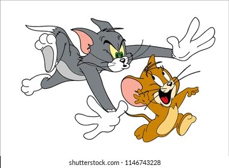

What is Tom and Jerry? Tom and Jerry is an American cartoon series about a hapless cat's never-ending pursuit of a clever mouse. Tom is the scheming cat, and Jerry is the spunky mouse. The series was driven entirely by action and visual humour; the characters almost never spoke.
Tom and Jerry is an American animated media franchise and series of comedy short films created in 1940 by William Hanna and Joseph Barbera. Best known for its 161 theatrical short films by Metro-Goldwyn-Mayer, the series centers on the rivalry between the titular characters of a cat named Tom and a mouse named Jerry.